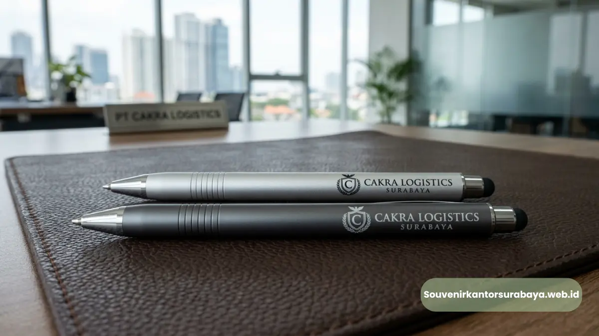
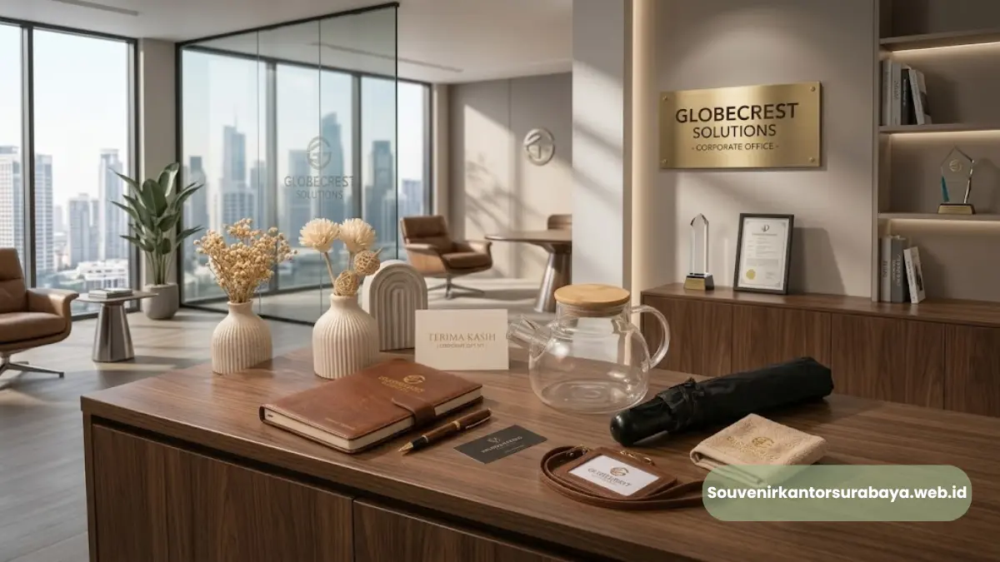

Pulpen metal stylus eksklusif sebagai pilihan utama souvenir event bisnis di Surabaya.
- Apa Itu Pulpen Metal Stylus dan Mengapa Cocok untuk Souvenir Event Bisnis?
- Apa Saja Keunggulan Pulpen Metal Stylus Dibanding Souvenir Lain?
- Kapan Waktu yang Tepat Menggunakan Pulpen Metal Stylus sebagai Souvenir?
- Bagaimana Cara Kerja Custom Logo pada Pulpen Metal Stylus?
- Apa Saja Kesalahan Umum saat Memilih Souvenir Pulpen untuk Event Bisnis?
- Bagaimana Cara Memesan Pulpen Metal Stylus Custom Logo di Surabaya?
Vendor pulpen metal stylus event bisnis Surabaya menyediakan alat tulis premium berbahan logam dengan ujung stylus untuk layar sentuh, cocok sebagai souvenir seminar, gathering, dan pameran korporat. Produk ini populer karena kesan mewah, fungsi ganda, dan daya tahan tinggi. Souvenir Kantor Surabaya melayani produksi custom logo dengan kualitas material terjamin untuk kebutuhan acara bisnis di Surabaya dan sekitarnya.
- Pulpen metal stylus menggabungkan fungsi menulis dan mengoperasikan layar sentuh dalam satu produk.
- Material logam memberi kesan eksklusif yang sesuai untuk audiens korporat dan relasi bisnis.
- Layanan custom logo membuat pulpen menjadi media branding yang dipakai berulang kali.
- Cocok untuk seminar, workshop, gathering, pameran, dan souvenir tamu VIP.
- Souvenir Kantor Surabaya menyediakan pemesanan dengan proses produksi yang jelas dan tepat waktu.
Apa Itu Pulpen Metal Stylus dan Mengapa Cocok untuk Souvenir Event Bisnis?
Pulpen metal stylus adalah alat tulis berbahan dasar logam seperti kuningan, aluminium, atau stainless steel yang dilengkapi ujung stylus berbahan karet konduktif untuk mengoperasikan layar sentuh smartphone maupun tablet. Kombinasi ini menjadikannya relevan dengan gaya kerja masa kini yang banyak mengandalkan perangkat digital.
Dalam konteks event bisnis, pulpen metal stylus dipilih karena tampilannya yang formal dan tidak terkesan murahan seperti pulpen plastik pada umumnya. Bobotnya yang lebih berat memberi sensasi premium saat digenggam, sehingga cocok dibagikan kepada tamu undangan, klien, maupun peserta seminar tingkat manajerial.
Alat tulis promosi secara umum juga dikenal sebagai salah satu media branding dengan tingkat retensi tinggi.
Apa Saja Keunggulan Pulpen Metal Stylus Dibanding Souvenir Lain?
Pulpen metal stylus unggul dari sisi daya tahan, kesan premium, dan fungsi ganda dibanding souvenir sekali pakai seperti notes atau gantungan kunci. Produk ini juga lebih mudah dibawa bepergian sehingga logo perusahaan tetap terlihat dalam jangka panjang.
Beberapa keunggulan utama pulpen metal stylus untuk kebutuhan korporat:
- Tampilan elegan yang merepresentasikan citra perusahaan secara profesional.
- Fungsi ganda sebagai alat tulis dan stylus layar sentuh yang relevan dengan kebiasaan kerja digital.
- Daya tahan material logam yang jauh lebih awet dibanding pulpen plastik standar.
- Ruang custom logo yang cukup luas pada badan pulpen untuk branding yang jelas terbaca.
- Nilai guna tinggi sehingga penerima cenderung menyimpan dan memakainya berulang, bukan membuangnya.
Menurut data yang dihimpun Promotional Products Association International (PPAI), sebagian besar penerima alat tulis bermerek mampu mengingat nama pengiklan setelah menerima dan menggunakan produk tersebut, menandakan efektivitas pulpen sebagai media branding jangka panjang dibanding souvenir yang cepat habis pakai.
Baca Juga
Kapan Waktu yang Tepat Menggunakan Pulpen Metal Stylus sebagai Souvenir?
Pulpen metal stylus tepat digunakan pada momen bisnis formal seperti seminar, workshop internal, gathering tahunan, pameran dagang, hingga penyambutan tamu VIP dan mitra kerja. Momen-momen ini membutuhkan souvenir yang mencerminkan profesionalisme perusahaan, bukan sekadar hadiah pelengkap.
Pada acara seminar atau konferensi, pulpen metal stylus biasanya dipadukan dalam satu paket seminar kit bersama notes dan tas jinjing. Pada gathering internal atau acara akhir tahun, pulpen ini dapat difungsikan sebagai apresiasi karyawan dengan sentuhan yang lebih personal melalui custom logo maupun nama penerima.
Untuk kebutuhan pameran dan exhibition, pulpen metal stylus juga efektif dibagikan di booth karena bentuknya ringkas, mudah dibawa pulang pengunjung, dan tetap membawa identitas brand perusahaan ke mana pun produk itu digunakan setelah acara selesai.
Bagaimana Cara Kerja Custom Logo pada Pulpen Metal Stylus?

Hasil pengerjaan custom logo presisi pada pulpen metal stylus untuk identitas brand perusahaan.
Custom logo pada pulpen metal stylus umumnya dikerjakan melalui teknik laser engraving atau cetak UV pada permukaan logam, menghasilkan tampilan logo yang presisi dan tidak mudah pudar dibanding metode cetak biasa. Teknik ini menjaga detail logo tetap tajam meski pulpen digunakan setiap hari.
Proses customization biasanya mempertimbangkan beberapa hal berikut agar hasil akhir maksimal:
- Ukuran dan posisi logo disesuaikan dengan bentuk badan pulpen agar proporsional.
- Warna material logam dipilih agar kontras dengan warna logo sehingga lebih terbaca.
- Jenis font dan elemen grafis disederhanakan bila logo memiliki detail yang rumit.
- Sample atau mock up desain disiapkan sebelum produksi massal dilakukan.
Souvenir Kantor Surabaya membantu proses ini dari tahap konsultasi desain hingga hasil akhir siap didistribusikan, sehingga tim internal perusahaan tidak perlu mengurus teknis produksi secara mandiri.
Apa Saja Kesalahan Umum saat Memilih Souvenir Pulpen untuk Event Bisnis?
Kesalahan umum yang sering terjadi adalah memilih pulpen berdasarkan harga termurah tanpa mempertimbangkan daya tahan dan kesan visualnya di mata penerima. Souvenir yang terlalu murah justru berisiko menurunkan persepsi kualitas brand perusahaan itu sendiri.
Beberapa kesalahan lain yang perlu dihindari:
- Memilih material yang mudah tergores atau catnya cepat mengelupas.
- Mengabaikan kualitas hasil cetak logo sehingga tampak buram atau tidak presisi.
- Tidak menyesuaikan jumlah pesanan dengan estimasi jumlah tamu atau peserta acara.
- Melewatkan tahap pengecekan sample sebelum produksi dalam jumlah besar.
Menghindari kesalahan ini penting agar souvenir yang dibagikan benar-benar mendukung citra profesional perusahaan, bukan justru menimbulkan kesan sebaliknya.
Bagaimana Cara Memesan Pulpen Metal Stylus Custom Logo di Surabaya?
Cara memesan pulpen metal stylus custom logo di Surabaya dimulai dengan konsultasi kebutuhan, pemilihan model dan warna, pengiriman file logo, hingga proses produksi dan pengiriman ke lokasi perusahaan. Alur ini dirancang agar tim internal tidak perlu repot menangani detail teknis produksi.
Berikut tahapan umum pemesanan di souvenirkantorsurabaya.web.id:
- Konsultasi kebutuhan jumlah, model, dan anggaran melalui tim Souvenir Kantor Surabaya.
- Pemilihan varian pulpen metal stylus sesuai identitas brand perusahaan.
- Pengiriman file logo untuk proses desain dan persetujuan mock up.
- Proses produksi dan quality control sebelum pengiriman.
- Pengiriman produk jadi ke lokasi kantor atau venue acara di Surabaya.
Perusahaan yang ingin memastikan souvenir event bisnis tampil profesional dan tepat waktu dapat langsung menghubungi souvenirkantorsurabaya.web.id untuk konsultasi kebutuhan pulpen metal stylus custom logo, mulai dari jumlah kecil untuk gathering internal hingga kebutuhan skala besar untuk seminar dan pameran korporat.

Hawa Nadira
Tim penulis CorporateGifts ID berfokus pada strategi souvenir kantor, merchandise korporat, dan inovasi brand untuk klien B2B.
Keahlian: Branding perusahaan, produksi souvenir, paket event, desain materi promosi.
Artikel Terkait

Pulpen Parker Ukir Nama Perusahaan Surabaya
Pulpen Parker ukir nama perusahaan Surabaya: souvenir korporat eksklusif yang memadukan prestise merek global dengan identitas brand.
Baca Selengkapnya
Paket Seminar Kit Lengkap untuk Kantor di Surabaya
Paket seminar kit kantor Surabaya adalah satu paket perlengkapan acara yang biasanya terdiri dari lanyard, id card, notebook, dan pulpen.
Baca Selengkapnya
Souvenir Kantor Surabaya
Vendor penyedia barang promosi, seminar kit, dan merchandise korporat profesional dengan layanan kustom logo di Surabaya.
Baca Selengkapnya